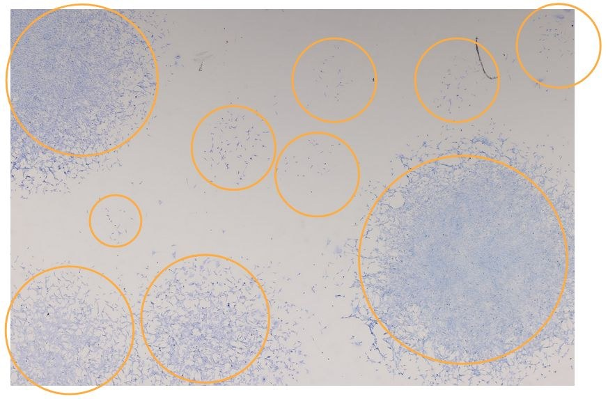
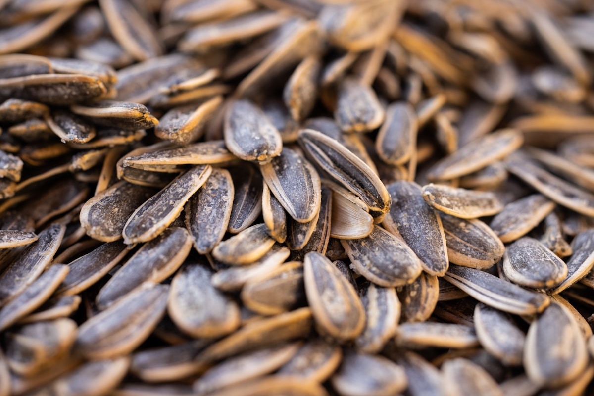
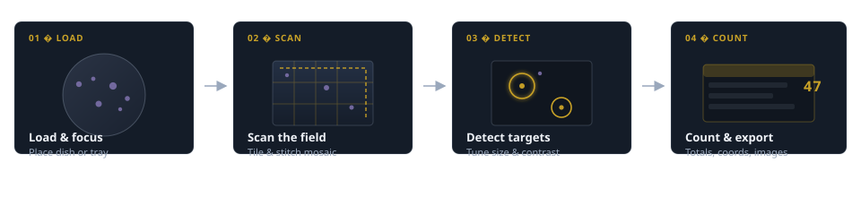

iota.ai
Microscale imaging & intelligence.
A microimaging automation and visual intelligence system that scans and enumerates cells, colonies, museum specimens, gemstones, and other minuscule objects — too small to count reliably by eye, at any scale.
The problem
When things are small, counting does not scale.
Labs score colony-forming assays and cell cultures dish by dish. Museums catalog thousands of specimens. Jewelers sort beads and melee by the tray. Quality teams inspect powders and particles under magnification. The work is repetitive, error-prone, and hard to reproduce — and it only gets worse as sample volume grows.
The system
Iris captures. Mµse understands.
iota is not a single machine — it is a microscale imaging and intelligence system built in two parts that work together: hardware that sees the field, and software that counts what matters.
- Iris Our microimaging hardware — precision motion and high-resolution capture across slides, trays, dishes, and custom fixtures.
- Mµse Our computer vision software — tunable detection by size, shape, contrast, and density, with counts and images you can export.
Who it is for
From slides and dishes to sorting trays.
Cell counting remains a core market — and the same Iris + Mµse system extends to museums, jewelers, manufacturers, and anyone else tallying minuscule objects under magnification.
-

Life sciences and clinical Colony-forming assays, cell cultures, stained slides, and nuclei counts — a core use case we are building for. -
Natural history and museums Count snails, shells, insect parts, seeds, and voucher specimens for digitization and collection management.
-
Jewelry and gemstones Tally melee diamonds, beads, and small findings across sorting trays — faster than hand counts with an audit trail.
-
Environmental and water quality Enumerate plankton, microplastics, or sediment particles in field and lab samples.
-
 Materials and manufacturing QC Particle sizing and defect counts in powders, coatings, solder spheres, and additive-manufacturing feedstock.
Materials and manufacturing QC Particle sizing and defect counts in powders, coatings, solder spheres, and additive-manufacturing feedstock. -

Agriculture and food Seed counts, pest eggs, yeast colonies, and contamination screening on production lines or in R&D.
Especially relevant in Pittsburgh
From the Carnegie Museum of Natural History mollusk collections and CMU/UPitt research labs to Liberty Avenue jewelers, regional water authorities, and the advanced manufacturing cluster around powder metals and robotics — Pittsburgh is full of people counting small things by hand. The iota system is being shaped with that ecosystem in mind.
How it works
Load. Scan. Detect. Count.
Brief human setup, then Iris acquires the field and Mµse analyzes it — whether your sample is a slide, a petri dish, a sorting tray, or a custom fixture.
-
01
Load and focus
Place the sample on Iris, home the stage, set focus for your object size.
-
02
Scan the field
Iris captures the sample area and assembles a high-resolution map.
-
03
Detect
Mµse isolates targets by the parameters you define for that specimen class.
-
04
Count and export
Mµse outputs totals, labeled images, and data for your workflow or database.

Where we are
Proven in practice, evolving for what’s next.
An early benchtop prototype validated automated counting on real samples — from cell colonies to other small objects under magnification. iota is the next-generation system — Iris hardware and Mµse vision — now being shaped with input from labs, museums, jewelers, and manufacturers who need reliable tallies without the tedium of doing it by hand.
Interest form
What would you use the iota system for?
We are gathering early interest from labs, museums, jewelers, manufacturers, and anyone else drowning in microscopic tally work. Tell us your use case.